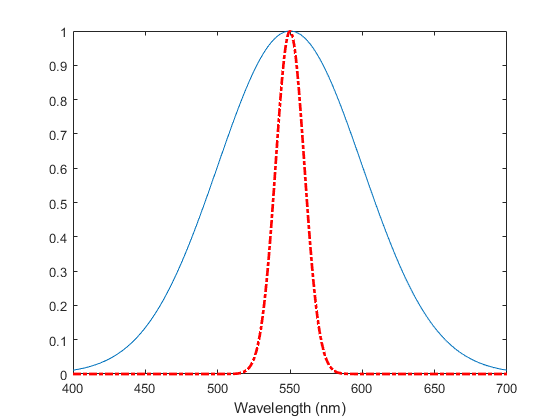
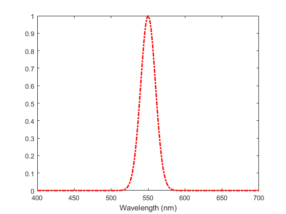

PlotSpectrum
Navigate to: Home | Alphabetic list | Grouped list | Source code: XXX.m
Convenience function to avoid plot(s.lam, s.val), and errors like plot(good.lam, bad.val). Additional parameters are forwarded to plot.
Contents
Syntax
function PlotSpectrum(s, varargin)
function PlotSpectrum(ax, s, varargin)
Input Arguments
- s: A valid spectrum (see SpectrumSanityCheck)
- ax: An Axes objct handle
- varargin: Any other arguments
Output Arguments
p: The Line object returned by plot
Algorithm
PlotSpectrum(s, varargin) plots the spectrum s to the current axes, essentially calling plot(s.lam,s.val,varargin{2:end}, i.e. optional arguments are simply forwarded to plot.
PlotSpectrum(ax, s, varargin) does the same, but plots to axes ax.
In addition, sets xlabel = "Wavelength (nm)";
See also
Matlab plot for additional arguments
Usage Example
function ExamplePlotSpectrum() % create some spectra s1 = GaussSpectrum(400:700,550,50); s2 = GaussSpectrum(400:700,550,10); % create a figure; figure(); ax = gca; % remember the axes PlotSpectrum(s1); hold on; % create a second figure figure() % Plot with some graph settings PlotSpectrum(s2,'r-.','LineWidth',2) % or any other arguments that plot(...) recognizes % now plot the same to the first figure PlotSpectrum(ax,s2,'r-.','LineWidth',2) % or any other arguments that plot(...) recognizes end
ans =
Line with properties:
Color: [1 0 0]
LineStyle: '-.'
LineWidth: 2
Marker: 'none'
MarkerSize: 6
MarkerFaceColor: 'none'
XData: [400 401 402 403 404 405 406 407 408 … ] (1×301 double)
YData: [1.3863e-49 6.1822e-49 2.7294e-48 … ] (1×301 double)
Use GET to show all properties
ans =
Line with properties:
Color: [1 0 0]
LineStyle: '-.'
LineWidth: 2
Marker: 'none'
MarkerSize: 6
MarkerFaceColor: 'none'
XData: [400 401 402 403 404 405 406 407 408 … ] (1×301 double)
YData: [1.3863e-49 6.1822e-49 2.7294e-48 … ] (1×301 double)
Use GET to show all properties
 